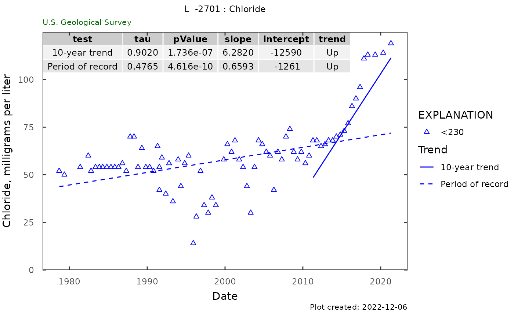

Function creates the cloride over time plot with trends.
Arguments
- qw_data
data frame returned from dataRetrieval::readWQPqw, must include columns ActivityStartDateTime, CharacteristicName, result_va
- plot_title
character title for plot
- y_label
character label for y axis. If left as NA, the function will attempt to use the "variableInfo" attribute of qw_data. This is attached to dataRetrieval output.
- CharacteristicName
character CharacteristicName to plot
- norm_range
a numerical range to potentially group the data. If NA, no grouping is shown.
- include_table
logical whether or not to include the trend table in the upper left corner.
Examples
# site <- "263819081585801"
# parameterCd <- c("00095","90095","00940","99220")
# site_data <- dataRetrieval::readWQPqw(site,
# parameterCd)
# Using package example data:
qw_data <- L2701_example_data$QW
plot_title <- paste(attr(qw_data, "siteInfo")[["station_nm"]], ": Chloride")
trend_plot(qw_data, plot_title)
